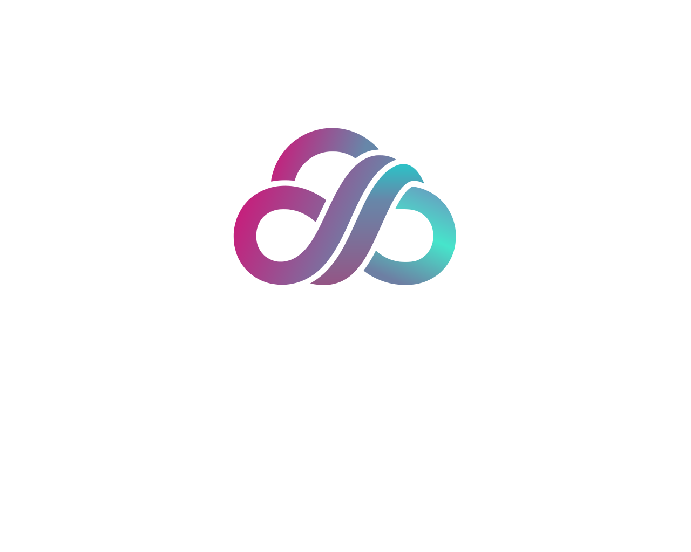
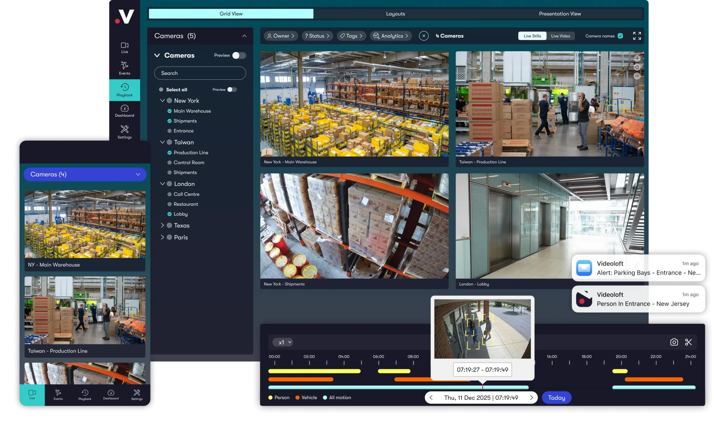

Computer Requirements
- Windows 11 22H2 or newer
- Minimum 7GB available RAM
- Minimum 32GB free on the selected storage drive
- Intel or AMD 64-bit processor
- ARM and Snapdragon devices are not supported

Software Path
Customers can compare Windows software requirements with the Videoloft Cloud Adapter and choose the path they want. The software is included at no extra charge after an eligible cloud storage order is confirmed, while the adapter is the paid hardware option for customers who prefer not to rely on a Windows computer.
Cloud Software Bridge
The Software Bridge is included at no extra charge after your software-path cloud storage order is confirmed. It lets compatible camera systems connect to cloud recording through an existing Windows computer.
The download link is sent after the cloud storage order and setup path are confirmed. Downloading the software does not activate cloud recording or start a subscription. Cloud recording starts after the storage request is approved and billing is completed.

Software BridgeMinimum Requirements
These requirements apply only to the software path. Customers who do not meet these requirements can choose the Videoloft Cloud Adapter path instead.
Adapter Option
The adapter creates a dedicated cloud connection for compatible camera systems and avoids depending on a Windows computer for long-term operation.
The Videoloft Cloud Adapter hardware is handled by ANY AI CAM. Customers can choose the adapter path and submit cloud storage plan details in the same request, then cloud recording billing is set up after activation.
View Adapter Options Order Adapter Hardware Videoloft Cloud Adapter
Videoloft Cloud Adapter